Chapter 4. Geocentric Models
2021-04-24
Setup
library(here)
source(here::here("code/scripts/source.R"))slides_dir = here::here("docs/slides/L03")Text

Introduction into regression models.
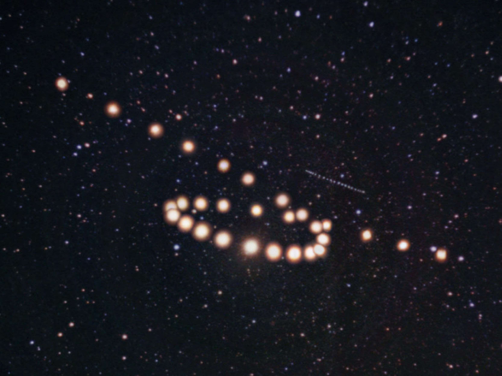
As scientists, we’re always dealing with questions that have higher dimensions and more complexity than what we can measure. Above is the path of Mars, called retrograde motion. It’s an illusion caused by the joint movement of ourselves and Mars. The relative velocities create the illusion.
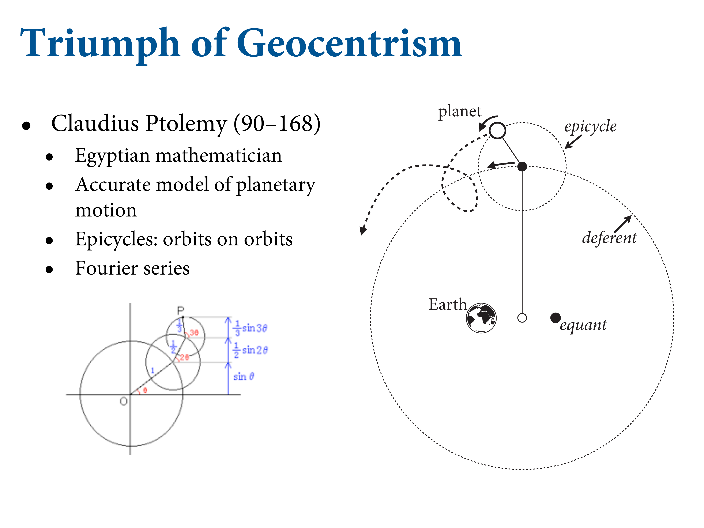
A lot of people published models, but this one is very accurate. They’re full-blown mathematical models. But they’re also wrong. You can’t use them to send a probe to Mars. This is like a regression model. They’re incredibly accurate for specific purposes, but they’re also deeply wrong. Keep in mind the small world / large world distinction.
You could say scientists are geocentric people. The reason Ptolemy’s model works so well is that they used Fourier series - circles in circles (“epicircles”). You can use this for anything with periodic cycles. And this model still works.

We’re here to build models of many diverse things. We don’t usually use Fourier models; instead we tend to use regression. Linear regression models are incredibly useful. But if you use them without wisdom, all they do is describe things without wisdom.
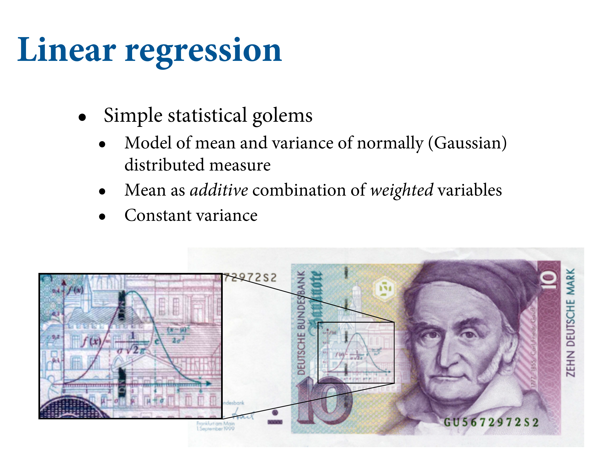
Statistical golems which measure how the mean of some measure changes when you learn other things. The mean is always modeled as some additive weighted measure of variables.

Gauss developed regression, but he did it using a Bayesian argument. He used it to predict when a comet would return.
4.1. Why normal distributions are normal
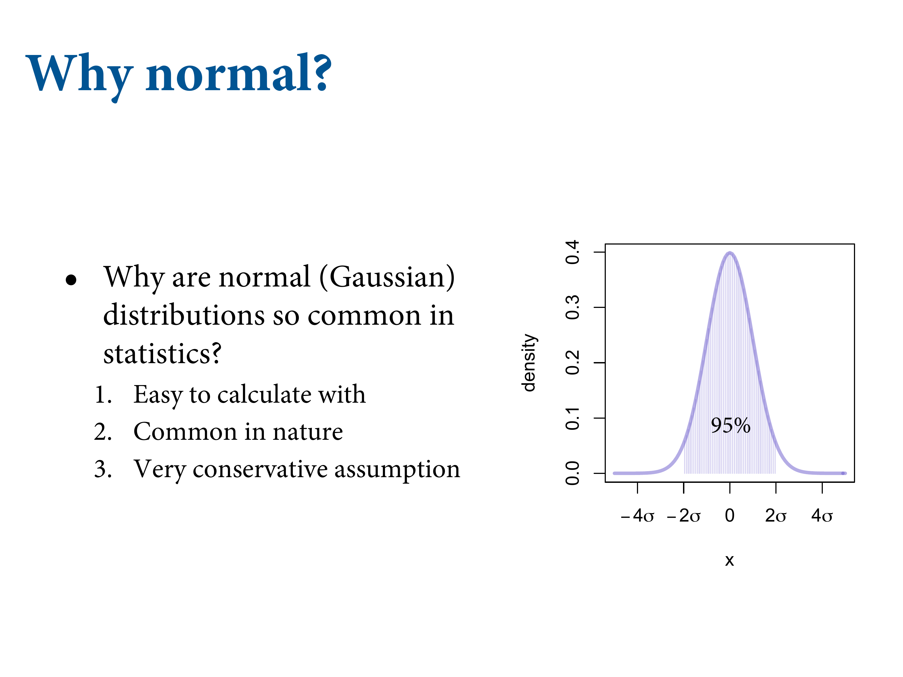
These appear all throughout nature. Why are they so normal? They arise from all over the place.
4.1.1. Normal by addition
One of the things that are nice about them is that they are additive. So easy to work with. Second is that they’re very common.

Imagine a football pitch. We all line up on the midfield line. Take a coin out of your pocket and flip it. One step left for heads, right for tails. Do it a few hundred times.
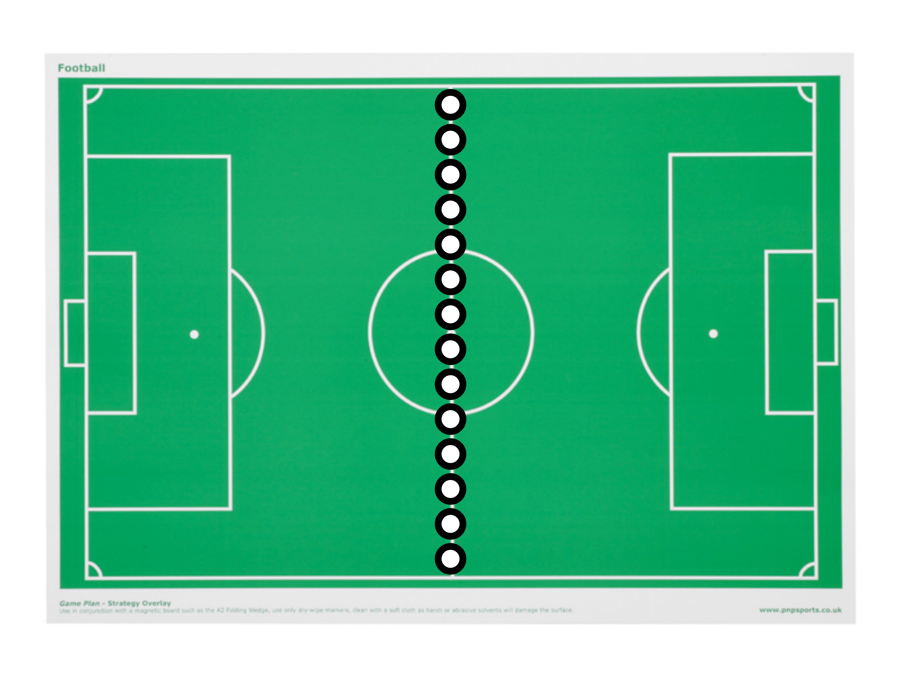

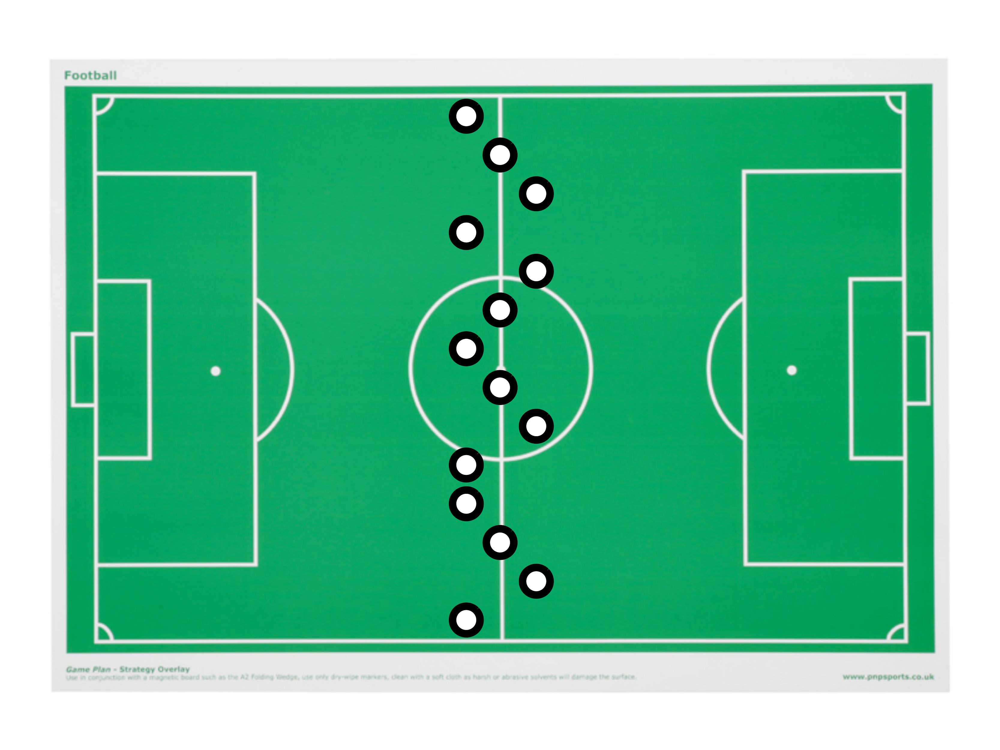

The frequency distribution will be Gaussian.
pos = replicate(1000, sum(runif(16, -1, 1)))
plot(density(pos))

This is a simulation of the soccer field experiment. After four flips (steps). Black follows one particular student. A pattern forms in the aggregation. This isn’t very Gaussian yet.

After 8 it’s pretty Gaussian.
And after 16 it’s very Gaussian. It’ll get wider and wider over time. Why does this happen? Lot’s of mathematical theorems. But the intuition is that each coin flip is a fluctuation. And in the long run, fluctuations tend to cancel. If you get a string of lefts, eventually you’ll get a string of rights, so the average student will end up near the middle. A very large number of them exactly cancel each other. There are more paths that will give you 0 than any other path. Then there are a few less that give you +1 or -1. And so forth.
That’s why a bunch of natural systems are normally distributed. We don’t need to know anything except that they cancel out. A lot of common statistics follow this kind of process. What you’re left with are particular shapes, called maximum entropy distributions. For the Gaussian, addition is our friend.
One of the things about it is that products of deviations are actually addition. So lots of multiplicative interactions also produce Gaussian distributions.
You can measure things on logarithmic scales.

This is the ontological perspective on distributions. When fluctuations tend to dampen one another, you end up with a symmetric curve. What neat and also frustrating is that you lose a lot of information about the generative processes. When you see heights are normally distributed, you learn basically nothing about it. This is cool because all that’s preserved from the underlying process is the mean and the variance. What’s terrible is that you can’t figure out the process from the distribution.
All the maximum entropy distributions have the same feature. Power laws arise through lots of processes, and it tells you nothing other than it has high variance.
The other perspective is epistemological. If you’re building a model and you want to be as conservative as possible, you should use the Gaussian distribution. Because any other distribution will be narrower. So it’s a very good assumption to use when you don’t have additional information.
The Gaussian is the one where all you’re willing to say is there’s a mean and a variance, you should use the Gaussian. It assumes the least.
4.1.2 Normal by multiplication
This code just samples 12 random numbers between 1.0 and 1.1, each representing a proportional increase in growth. Thus 1.0 means no additional growth and 1.1 means a 10% increase.
prod(1 + runif(12, 0, .1))## [1] 1.744779Now what distribution do you think these random products will take? Let’s generate 10,000 of them and see:
growth = replicate(1e4, prod(1 + runif(12, 0, 0.1)))
rethinking::dens(growth, norm.comp = T) Multiplying small numbers if approximately the same as addition.
Multiplying small numbers if approximately the same as addition.
The smaller the effect of each locus, the better this additive approximation will be. In this way, small effects that multiply together are approximately additive, and so they also tend to stabilize on Gaussian distributions.
Verify by comparing:
big = replicate(1e4, prod(1 + runif(12, 0, .5)))
small = replicate(1e4, prod(1 + runif(12, 0, 0.01)))
rethinking::dens(big, norm.comp = T)
rethinking::dens(small, norm.comp = T) ### 4.1.3. Normal by log-multiplication
### 4.1.3. Normal by log-multiplication
Large deviates that are multiplied together do not produce Gaussian distributions, but they do tend to produce Gaussian distributions on the log scale. e.g.:
log.big = replicate(1000, log(prod(1 + runif(12, 0, .5))))
rethinking::dens(log.big, norm.comp = T) Adding logs is equivalent to multiplying the original numbers.
Adding logs is equivalent to multiplying the original numbers.
4.1.4. Using Gaussian distributions
Caution: Many natural (and unnatural) processes have much heavier tails - much higher probabilities of producing extreme events.
4.2. A language for describing models

All of those things are linear models. Just learn the linear modeling strategies instead of the specific procedures. We’ll build up linear models from the ground up. You can build the model you need.
4.2.1. Re-describing the glob tossing model

We’re going to write out all the models in the same standard notation. We’re going to write this in our code so that it’s reinforced.

Same applies for more complex models. Some of these things you can observe (water tosses), and some you can’t (regression slopes). We need to list these variables and then define them.

The motor of these linear regression models. There’s some mean of the normal distribution that is explained by \(x\). But \(x\) also has a distribution.
w = 6; n = 9
p_grid = seq(from = 0, to = 1, length.out = 100)
posterior = dbinom(w, n, p_grid) * dunif(p_grid, 0, 1)
posterior = posterior / sum(posterior)
samples = sample(p_grid, 1e5, prob = posterior, replace = T)
rethinking::dens(samples) ## 4.3. Gaussian model of height
## 4.3. Gaussian model of height
Before we add a predictor variable, we want to model the outcome variable as a Gaussian distribution. There are an infinite number of possible Gaussian distributions based on infinite combinations of \(\mu\) and \(\sigma\). We want our Bayesian machine to consider every possible distribution, and rank them by posterior plausibility.
4.3.1. The data

These height data come from Nancy Howell’s data. Howell1 is a simplified dataset. We’ll focus just on adult heights at the moment.
data(Howell1)
d = Howell1str(d)## 'data.frame': 544 obs. of 4 variables:
## $ height: num 152 140 137 157 145 ...
## $ weight: num 47.8 36.5 31.9 53 41.3 ...
## $ age : num 63 63 65 41 51 35 32 27 19 54 ...
## $ male : int 1 0 0 1 0 1 0 1 0 1 ...rethinking::precis(d)## mean sd 5.5% 94.5% histogram
## height 138.2635963 27.6024476 81.108550 165.73500 ▁▁▁▁▁▁▁▂▁▇▇▅▁
## weight 35.6106176 14.7191782 9.360721 54.50289 ▁▂▃▂▂▂▂▅▇▇▃▂▁
## age 29.3443934 20.7468882 1.000000 66.13500 ▇▅▅▃▅▂▂▁▁
## male 0.4724265 0.4996986 0.000000 1.00000 ▇▁▁▁▁▁▁▁▁▇d$height## [1] 151.7650 139.7000 136.5250 156.8450 145.4150 163.8300 149.2250 168.9100 147.9550 165.1000 154.3050
## [12] 151.1300 144.7800 149.9000 150.4950 163.1950 157.4800 143.9418 121.9200 105.4100 86.3600 161.2900
## [23] 156.2100 129.5400 109.2200 146.4000 148.5900 147.3200 137.1600 125.7300 114.3000 147.9550 161.9250
## [34] 146.0500 146.0500 152.7048 142.8750 142.8750 147.9550 160.6550 151.7650 162.8648 171.4500 147.3200
## [45] 147.9550 144.7800 121.9200 128.9050 97.7900 154.3050 143.5100 146.7000 157.4800 127.0000 110.4900
## [56] 97.7900 165.7350 152.4000 141.6050 158.8000 155.5750 164.4650 151.7650 161.2900 154.3050 145.4150
## [67] 145.4150 152.4000 163.8300 144.1450 129.5400 129.5400 153.6700 142.8750 146.0500 167.0050 158.4198
## [78] 91.4400 165.7350 149.8600 147.9550 137.7950 154.9400 160.9598 161.9250 147.9550 113.6650 159.3850
## [89] 148.5900 136.5250 158.1150 144.7800 156.8450 179.0700 118.7450 170.1800 146.0500 147.3200 113.0300
## [100] 162.5600 133.9850 152.4000 160.0200 149.8600 142.8750 167.0050 159.3850 154.9400 148.5900 111.1250
## [111] 111.7600 162.5600 152.4000 124.4600 111.7600 86.3600 170.1800 146.0500 159.3850 151.1300 160.6550
## [122] 169.5450 158.7500 74.2950 149.8600 153.0350 96.5200 161.9250 162.5600 149.2250 116.8400 100.0760
## [133] 163.1950 161.9250 145.4150 163.1950 151.1300 150.4950 141.6050 170.8150 91.4400 157.4800 152.4000
## [144] 149.2250 129.5400 147.3200 145.4150 121.9200 113.6650 157.4800 154.3050 120.6500 115.6000 167.0050
## [155] 142.8750 152.4000 96.5200 160.0000 159.3850 149.8600 160.6550 160.6550 149.2250 125.0950 140.9700
## [166] 154.9400 141.6050 160.0200 150.1648 155.5750 103.5050 94.6150 156.2100 153.0350 167.0050 149.8600
## [177] 147.9550 159.3850 161.9250 155.5750 159.3850 146.6850 172.7200 166.3700 141.6050 142.8750 133.3500
## [188] 127.6350 119.3800 151.7650 156.8450 148.5900 157.4800 149.8600 147.9550 102.2350 153.0350 160.6550
## [199] 149.2250 114.3000 100.9650 138.4300 91.4400 162.5600 149.2250 158.7500 149.8600 158.1150 156.2100
## [210] 148.5900 143.5100 154.3050 131.4450 157.4800 157.4800 154.3050 107.9500 168.2750 145.4150 147.9550
## [221] 100.9650 113.0300 149.2250 154.9400 162.5600 156.8450 123.1900 161.0106 144.7800 143.5100 149.2250
## [232] 110.4900 149.8600 165.7350 144.1450 157.4800 154.3050 163.8300 156.2100 153.6700 134.6200 144.1450
## [243] 114.3000 162.5600 146.0500 120.6500 154.9400 144.7800 106.6800 146.6850 152.4000 163.8300 165.7350
## [254] 156.2100 152.4000 140.3350 158.1150 163.1950 151.1300 171.1198 149.8600 163.8300 141.6050 93.9800
## [265] 149.2250 105.4100 146.0500 161.2900 162.5600 145.4150 145.4150 170.8150 127.0000 159.3850 159.4000
## [276] 153.6700 160.0200 150.4950 149.2250 127.0000 142.8750 142.1130 147.3200 162.5600 164.4650 160.0200
## [287] 153.6700 167.0050 151.1300 147.9550 125.3998 111.1250 153.0350 139.0650 152.4000 154.9400 147.9550
## [298] 143.5100 117.9830 144.1450 92.7100 147.9550 155.5750 150.4950 155.5750 154.3050 130.6068 101.6000
## [309] 157.4800 168.9100 150.4950 111.7600 160.0200 167.6400 144.1450 145.4150 160.0200 147.3200 164.4650
## [320] 153.0350 149.2250 160.0200 149.2250 85.0900 84.4550 59.6138 92.7100 111.1250 90.8050 153.6700
## [331] 99.6950 62.4840 81.9150 96.5200 80.0100 150.4950 151.7650 140.6398 88.2650 158.1150 149.2250
## [342] 151.7650 154.9400 123.8250 104.1400 161.2900 148.5900 97.1550 93.3450 160.6550 157.4800 167.0050
## [353] 157.4800 91.4400 60.4520 137.1600 152.4000 152.4000 81.2800 109.2200 71.1200 89.2048 67.3100
## [364] 85.0900 69.8500 161.9250 152.4000 88.9000 90.1700 71.7550 83.8200 159.3850 142.2400 142.2400
## [375] 168.9100 123.1900 74.9300 74.2950 90.8050 160.0200 67.9450 135.8900 158.1150 85.0900 93.3450
## [386] 152.4000 155.5750 154.3050 156.8450 120.0150 114.3000 83.8200 156.2100 137.1600 114.3000 93.9800
## [397] 168.2750 147.9550 139.7000 157.4800 76.2000 66.0400 160.7000 114.3000 146.0500 161.2900 69.8500
## [408] 133.9850 67.9450 150.4950 163.1950 148.5900 148.5900 161.9250 153.6700 68.5800 151.1300 163.8300
## [419] 153.0350 151.7650 132.0800 156.2100 140.3350 158.7500 142.8750 84.4550 151.9428 161.2900 127.9906
## [430] 160.9852 144.7800 132.0800 117.9830 160.0200 154.9400 160.9852 165.9890 157.9880 154.9400 97.9932
## [441] 64.1350 160.6550 147.3200 146.7000 147.3200 172.9994 158.1150 147.3200 124.9934 106.0450 165.9890
## [452] 149.8600 76.2000 161.9250 140.0048 66.6750 62.8650 163.8300 147.9550 160.0200 154.9400 152.4000
## [463] 62.2300 146.0500 151.9936 157.4800 55.8800 60.9600 151.7650 144.7800 118.1100 78.1050 160.6550
## [474] 151.1300 121.9200 92.7100 153.6700 147.3200 139.7000 157.4800 91.4400 154.9400 143.5100 83.1850
## [485] 158.1150 147.3200 123.8250 88.9000 160.0200 137.1600 165.1000 154.9400 111.1250 153.6700 145.4150
## [496] 141.6050 144.7800 163.8300 161.2900 154.9000 161.3000 170.1800 149.8600 123.8250 85.0900 160.6550
## [507] 154.9400 106.0450 126.3650 166.3700 148.2852 124.4600 89.5350 101.6000 151.7650 148.5900 153.6700
## [518] 53.9750 146.6850 56.5150 100.9650 121.9200 81.5848 154.9400 156.2100 132.7150 125.0950 101.6000
## [529] 160.6550 146.0500 132.7150 87.6300 156.2100 152.4000 162.5600 114.9350 67.9450 142.8750 76.8350
## [540] 145.4150 162.5600 156.2100 71.1200 158.7500Filter for adults:
d2 = d[d$age >= 18, ]4.3.2. The model

Here’s the distribution of height data. \(h\) is distributed normally. 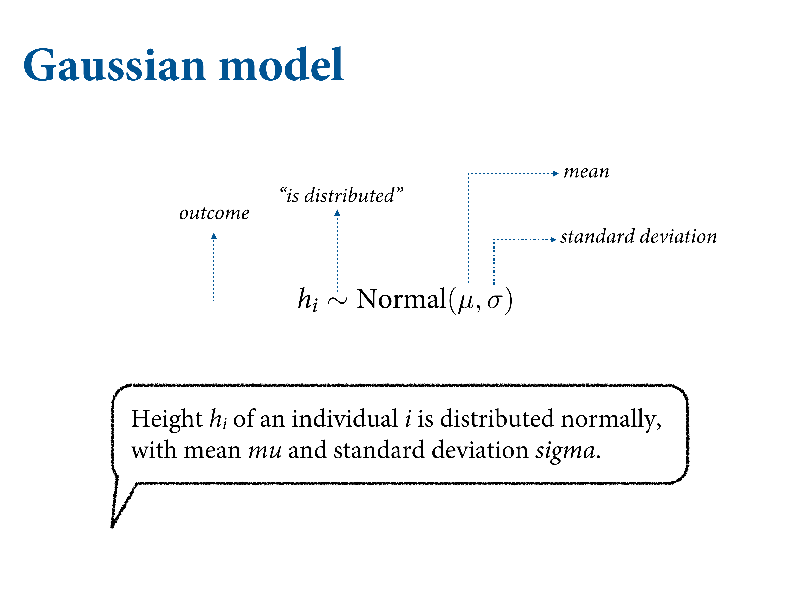
There’s nothing special about the particular letters used. But it’s important to be able to read this. Now we have three variables. One is observed, and two have not. We have to infrer them from \(h\).

Because this is Bayesian, they have prior distributions. Using 187 cm (height of Richard) as the prior. Standard deviation is on the mean. 20 is very generous. Then for sigma, uniform 50.
Whatever the prior, it’s a very good idea to plot your priors:
curve(dnorm(x, 178, 20), from = 100, to = 250)
The \(\sigma\) prior is a truly flat prior.
curve(dunif(x, 0, 50), from = -10, to = 60) A standard deviation like \(\sigma\) must be positive, so bounding it at zero makes sense.
A standard deviation like \(\sigma\) must be positive, so bounding it at zero makes sense.

Before your model has seen the data. This is not p-hacking, because we’re not using the data. We’re using scientific information. All you have to sample values.
sample_mu = rnorm(1e4, 178, 20)
sample_sigma = runif(1e4, 0, 50)
prior_h = rnorm(1e4, sample_mu, sample_sigma)
rethinking::dens(prior_h) This is not a normal distribution. It’s a t-distribution because you have uncertainty about variance, which gives it fat tails. There are some really really tall individuals in this prior. But at least we don’t have any negative heights.
This is not a normal distribution. It’s a t-distribution because you have uncertainty about variance, which gives it fat tails. There are some really really tall individuals in this prior. But at least we don’t have any negative heights.
Let’s see the implied heights:
sample_mu = rnorm(1e4, 178, 100)
prior_h = rnorm(1e4, sample_mu, sample_sigma)
rethinking::dens(prior_h)
Before it even sees the data, it expects 4% of people to have negative height, and also some giants. Does it matter? In this case we have so much data that the silly prior is harmless. But that won’t always be the case. There are plenty of inference problems for which the data alone are not sufficient, no matter how numerous. Bayes lets us proceed in these cases, but only if we use our scientific knowledge to construct sensible priors. The important thing is that your prior not be based on the values in the data, but only on what you know about the data before you see it.
Let’s use a different prior.

Typical linear regression priors are flat. They’re bad new because they create impossible outcomes before you even see the data.
4.3.3. Grid approximation of the posterior distribution

Once you start working with mixed models, the priors have a greater effect, so it’s good to get used to prior predictive simulation now.
We’ll calculate the grid and the posterior probability. How? Multiply the observed height conditional on the mu and sigma at that point. Times the prior probability of that mu and sigma. They code to do this is some loops.

100x100 you start to see the Gaussian hill. Gradually the values become increasingly implausible. What we do here is draw samples.
Here are the guts of the golem:
mu.list <- seq( from=150, to=160 , length.out=100 )
sigma.list <- seq( from=7 , to=9 , length.out=100 )
post <- expand.grid( mu=mu.list , sigma=sigma.list )
post$LL <- sapply( 1:nrow(post) , function(i) sum(
dnorm( d2$height , post$mu[i] , post$sigma[i] , log=TRUE ) ) )
post$prod <- post$LL + dnorm( post$mu , 178 , 20 , TRUE ) +
dunif( post$sigma , 0 , 50 , TRUE )
post$prob <- exp( post$prod - max(post$prod) )Inspect the posterior distribution
rethinking::contour_xyz(post$mu, post$sigma, post$prob)
rethinking::image_xyz(post$mu, post$sigma, post$prob) ### 4.3.4. Sampling from the posterior
### 4.3.4. Sampling from the posterior
sample.rows <- sample( 1:nrow(post) , size=1e4 , replace=TRUE , prob=post$prob )
sample.mu <- post$mu[ sample.rows ]
sample.sigma <- post$sigma[ sample.rows ]plot( sample.mu , sample.sigma , cex=0.5 , pch=16 , col=rethinking::col.alpha(rangi2,0.1) )
rethinking::dens(sample.mu)
rethinking::dens(sample.sigma) Summarise the widths:
Summarise the widths:
rethinking::PI(sample.mu)## 5% 94%
## 153.9394 155.2525rethinking::PI(sample.sigma)## 5% 94%
## 7.323232 8.252525
Once you have the samples, you just work with the data frame. You can look at cross-sections of this.
Note that this isn’t perfectly symmetrical for sigma - the right tail is longer. This is almost always true for SD parameters. Why? Because you know something about the SD before you see the data: you know it’s positive. So you always have more uncertainty on the higher end.
Let’s analyze only 20 of the heights from teh height data to reveal this issue.
d3 = sample(d2$height, size = 20)Now repeat the code from the previous subsection, modified to focus on the 20 heights in d3 rather than the original data.
mu.list <- seq( from=150, to=170 , length.out=200 )
sigma.list <- seq( from=4 , to=20 , length.out=200 )
post2 <- expand.grid( mu=mu.list , sigma=sigma.list )
post2$LL <- sapply( 1:nrow(post2) , function(i)
sum( dnorm( d3 , mean=post2$mu[i] , sd=post2$sigma[i] ,
log=TRUE ) ) )
post2$prod <- post2$LL + dnorm( post2$mu , 178 , 20 , TRUE ) +
dunif( post2$sigma , 0 , 50 , TRUE )
post2$prob <- exp( post2$prod - max(post2$prod) )
sample2.rows <- sample( 1:nrow(post2) , size=1e4 , replace=TRUE , prob=post2$prob )
sample2.mu <- post2$mu[ sample2.rows ]
sample2.sigma <- post2$sigma[ sample2.rows ]
plot( sample2.mu , sample2.sigma , cex=0.5 ,
col=col.alpha(rangi2,0.1) ,
xlab="mu" , ylab="sigma" , pch=16 )
rethinking::dens(sample2.sigma, norm.comp = T) Now you can see the posterior for \(\sigma\) is not Gaussian, but as a long tail towards higher values.
Now you can see the posterior for \(\sigma\) is not Gaussian, but as a long tail towards higher values.
4.3.5. Finding the posterior distribution with quap
Grid approximation is useful for teaching, but now we’ll do a fancy approximation of it so we can go to higher dimensions. THat approximation asserts that the distribution is normal for every parameter. But once you get to generalised linear models it’s a bad approximation. How does this work? You need two numbers: mean and SD. For multi-dimensional Gaussians, you also need a covariance matrix for the parameters. How do you do it? You climb the hill. It doesn’t know what the hill is, but it knows what is up and down. So it tries to find the peak. When it gets to the peak, it needs to measure the curvature of the peak. And that’s all it needs to approxi ate the curve. Often called the LaPlace approximation.
Repeat the code to load the data and select the adults:
data(Howell1)
d <- Howell1
d2 <- d[ d$age >= 18 , ]
quap works by making the formula lists. Typically there’s some abbreviated forms. You’ll have to write how every parameter multiplies every variable.
flist = alist(
height ~ dnorm(mu, sigma),
mu ~ dnorm(178, 20),
sigma ~ dunif(0, 50)
)Plug in the parameters and plug it into quap.
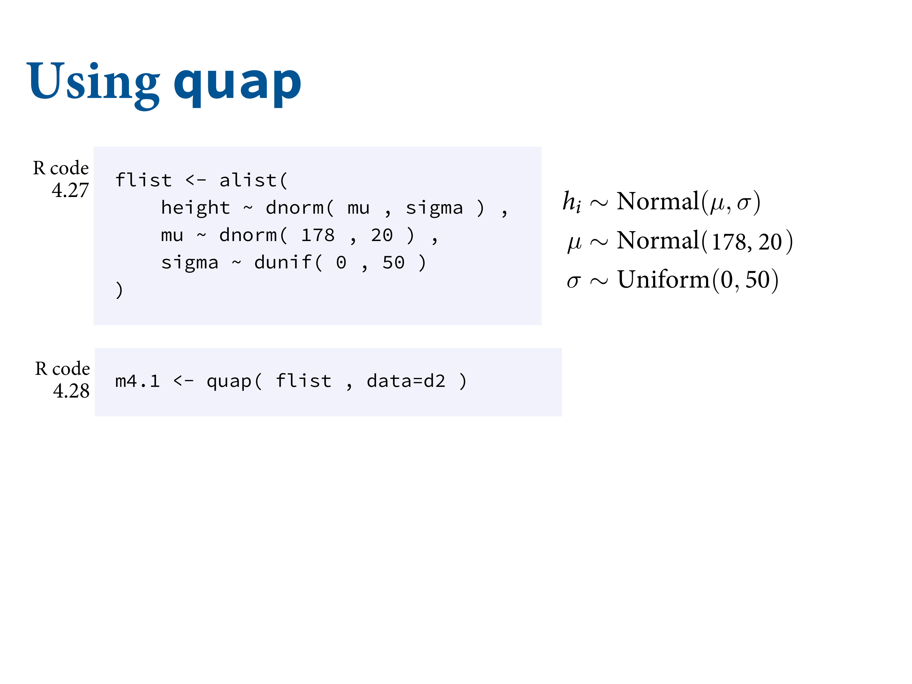
m4.1 = rethinking::quap(flist, data = d2)quap translates it into a statement about a log probability of the combinations of data, then passes it to the hill-finding algorithm built into R called optim, which passes it back as a list of means and a covariance matrix, which is sufficient to create a posterior distribution.

precis is minimalistic compared to summary. Provides the 89% compatibility intervals.
rethinking::precis(m4.1)## mean sd 5.5% 94.5%
## mu 154.60678 0.4119987 153.948324 155.265231
## sigma 7.73141 0.2913933 7.265707 8.197113These numbers provide Gaussian approximations for each parameter’s marginal distribution, meaning the plausibility of each value of \(\mu\) after averaging over the plausibilities of each value of \(\sigma\).
quap estimates the posterior by climbing it like a hill. To do this, it has to start climbing someplace, at some combination of parameter values. But it’s possible to specify a starting value
start <- list(
mu=mean(d2$height),
sigma=sd(d2$height)
)
m4.1 <- quap( flist , data=d2 , start=start )Let’s splice in a more informative prior for \(\mu\) so you can see the effect.
m4.2 <- quap(
alist(
height ~ dnorm( mu , sigma ) ,
mu ~ dnorm( 178 , 0.1 ) ,
sigma ~ dunif( 0 , 50 )
) , data=d2 )
precis( m4.2 )## mean sd 5.5% 94.5%
## mu 177.86375 0.1002354 177.70356 178.02395
## sigma 24.51756 0.9289235 23.03297 26.002164.3.6. Sampling from a quap
To this the matrix of variances and covariances among all paris of parameters:
rethinking::vcov(m4.1)## mu sigma
## mu 0.1697396109 0.0002180307
## sigma 0.0002180307 0.0849058224This is a Variant-covariance Matrix. It is the multi-dimensional glue of a quadratic approximation, because it tells us how each parameter relates to every other parameter in the posterior distribution.
diag(rethinking::vcov( m4.1 ))## mu sigma
## 0.16973961 0.08490582cov2cor(rethinking::vcov( m4.1 ) )## mu sigma
## mu 1.000000000 0.001816174
## sigma 0.001816174 1.000000000
Compare quap to grid approximation. The values in the rows go together. But plot the columns by themselves. Sigma still has a skew.
post = rethinking::extract.samples(m4.1, n = 1e4)
head(post)## mu sigma
## 1 154.3996 7.844182
## 2 154.2124 8.086808
## 3 153.9507 8.025614
## 4 154.5828 8.153164
## 5 155.1950 7.687962
## 6 155.1171 7.753253precis(post)## mean sd 5.5% 94.5% histogram
## mu 154.609679 0.4064340 153.955863 155.262132 ▁▁▅▇▂▁▁
## sigma 7.728974 0.2924447 7.262134 8.193688 ▁▁▁▂▅▇▇▃▁▁▁▁Here’s a peak under the motor of extract.samples:
post = MASS::mvrnorm(n = 1e4, mu = coef(m4.1), Sigma = vcov(m4.1))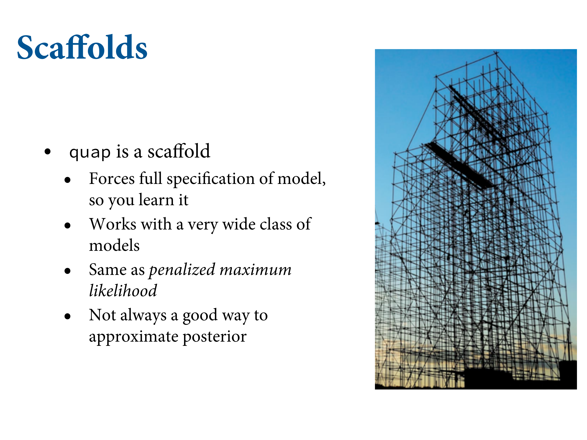
To find out what it means, you draw some lines. I think of this tool as a scaffold so you can learn how to do modelling. But after you can use packages that use abbreviations. But it’s important to learn how to build them. You’ll come to appreciate how explicit it is.
You want to graduate beyond quap because for generalised linear modelling it becomes dangerous.
4.4. Linear prediction
Let’s look at how height in these Kalahari foragers covaries with weight.

data(Howell1); d <- Howell1; d2 <- d[ d$age >= 18 , ]
plot( d2$height ~ d2$weight )
So now let’s add a line. When we learn the predictions, we can learn the statistical association between weight and height. The question is how would you statistically describe this relationship?
4.14.1. The linear model strategy

So what do we do? We add another variable to the model, and now we have a linear regression. This model has all the standard features. Now there’s an \(i\) on \(mu\). That means it’s different for each person. \(alpha\) is out population mean. \(beta\) describes the relationship between \(x\) and \(y\).

The equals sign mean that it’s deterministically defined. \(beta\) is what you’d call a slope, or the rate of change in \(mu\) for a unit change in \(x\). Why do we subtract x bar? This is called centering the predictor. Should be your default behaviour.

It’s now predicting lines. So what does the prior predictive distribution look like? A whole lot of lines.

set.seed(2971)
N = 100 # 100 lines
a = rnorm(N, 178, 20)
b = rnorm(N, 0, 10)Now we have 100 paris of \(\alpha\) and \(\beta\) values.
Simulate 100 lines as before.
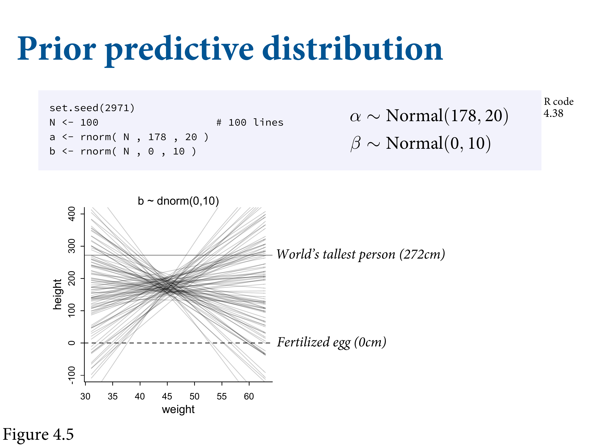
plot( NULL , xlim=range(d2$weight) , ylim=c(-100,400), xlab="weight" , ylab="height" )
abline( h=0 , lty=2 )
abline( h=272 , lty=1 , lwd=0.5 )
mtext( "b ~ dnorm(0,10)" )
xbar <- mean(d2$weight)
for ( i in 1:N ) curve( a[i] + b[i]*(x - xbar),
from=min(d2$weight) ,
to=max(d2$weight) , add=TRUE ,
col=col.alpha("black",0.2) )
Getting the scatter right is important, because you can see these impossibly steep lines. Some of them take you from impossibly short individuals to twice the tallest. Want to dampen these expectations. Practise on these safe examples.

We know that \(beta\) is positive, so let’s make it positive. A log normal distribution is a normal distribution logged. What’s nice is that they’re all positive. We want to assume the relationship between weight and height is positive.
b = rlnorm(1e4, 0, 1)
rethinking::dens(b, xlim = c(0,5), adj = 0.1)
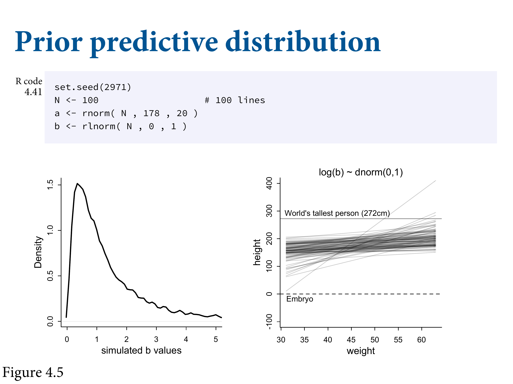
Still a lot of scatter, but still one crazy line. Now at least we’re in the possible range.
set.seed(2971)
N <- 100 # 100 lines
a <- rnorm( N , 178 , 20 )
b <- rlnorm( N , 0 , 1 )
plot( NULL , xlim=range(d2$weight) , ylim=c(-100,400), xlab="weight" , ylab="height" )
abline( h=0 , lty=2 )
abline( h=272 , lty=1 , lwd=0.5 )
mtext( "b ~ dnorm(0,10)" )
xbar <- mean(d2$weight)
for ( i in 1:N ) curve( a[i] + b[i]*(x - xbar),
from=min(d2$weight) ,
to=max(d2$weight) , add=TRUE ,
col=col.alpha("black",0.2) ) > How to choose a prior? The procedure we’ve performed in this chapter is to choose priors conditional on pre-data knowledge of the variables - their constraints, ranges, and theoretical relationships.
> How to choose a prior? The procedure we’ve performed in this chapter is to choose priors conditional on pre-data knowledge of the variables - their constraints, ranges, and theoretical relationships.
4.4.2. Finding the posterior distribution

Measure xbar. Then define the quap model. Focus on the \(mu\) line.
# load data again, since it's a long way back
data(Howell1); d <- Howell1; d2 <- d[ d$age >= 18 , ]
# define the average weight, x-bar
xbar <- mean(d2$weight)
# fit model
m4.3 <- quap(
alist(
height ~ dnorm( mu , sigma ) ,
mu <- a + b*( weight - xbar ) ,
a ~ dnorm( 178 , 20 ) ,
b ~ dlnorm( 0 , 1 ) ,
sigma ~ dunif( 0 , 50 )
) , data=d2 )m4.3b <- quap(
alist(
height ~ dnorm( mu , sigma ) ,
mu <- a + exp(log_b)*( weight - xbar ),
a ~ dnorm( 178 , 20 ) ,
log_b ~ dnorm( 0 , 1),
sigma ~ dunif( 0 , 50 )
) , data=d2 )4.4.3. Interpreting the posterior distribution
precis(m4.3)## mean sd 5.5% 94.5%
## a 154.6013671 0.27030766 154.1693633 155.0333710
## b 0.9032807 0.04192363 0.8362787 0.9702828
## sigma 5.0718809 0.19115478 4.7663786 5.3773831See the covariances
round(rethinking::vcov(m4.3), 3)## a b sigma
## a 0.073 0.000 0.000
## b 0.000 0.002 0.000
## sigma 0.000 0.000 0.037Very little covariation among the parameters in this case.
# Show both the marginal posteriors and the covariance
pairs(m4.3) In the practice problems at the end of the chapter, you’ll see that the lack of covariance among the parameters results from Centering.
In the practice problems at the end of the chapter, you’ll see that the lack of covariance among the parameters results from Centering.
Plot the data with the posterior mean values for a and b:
plot( height ~ weight , data=d2 , col=rangi2 )
post <- extract.samples( m4.3 )
a_map <- mean(post$a)
b_map <- mean(post$b)
curve( a_map + b_map*(x - xbar) , add=TRUE )

We managed to get this posterior distribution, and we can take from the precis values the a and bb values and draw a line with those, where a is the expected value of height (155) when weight is at its average value. And the expected change in height is nearly 1. But the posterior distribution is not a single line, it’s an infinite number of lines each with a probability. So let’s get more lines on the graph to show the uncertainty in inference.

Here’s the basic idea. We’re going to sample from the posterior distribution. But what’s great is that you can use this process for any model you ever want to fit. You can sample from the posterior, then push the samples back through the model itself to plot the uncertainty.
 You’re doing calculus here, but just doesn’t feel like it. Each row is a line. Lines that are more plausible have more ways to happen, so they’re overlap more in the areas that are more plausible.
You’re doing calculus here, but just doesn’t feel like it. Each row is a line. Lines that are more plausible have more ways to happen, so they’re overlap more in the areas that are more plausible.
post = rethinking::extract.samples(m4.3)
post[1:5, ]## a b sigma
## 1 154.4622 0.9150822 5.341227
## 2 154.2649 0.9236067 5.160423
## 3 155.1258 0.9495934 5.108891
## 4 154.5923 0.8458252 4.994873
## 5 154.2600 0.9065280 5.110351
To see this work, and reinforce how Bayesian updating works, let’s start with a reduced dataset of 10 randomly sampled adults. We fit our linear regression model, and get a quadratic approximation of the posterior distribution. You’ll see they’re very different from the prior. Now they’re very concentrated around the data. You can see there’s a lot of scatter because the model isn’t sure where it should be.
N <- 10
dN <- d2[ 1:N , ]
mN <- quap(
alist(
height ~ dnorm( mu , sigma ) ,
mu <- a + b*( weight - mean(weight) ) ,
a ~ dnorm( 178 , 20 ) ,
b ~ dlnorm( 0 , 1 ) ,
sigma ~ dunif( 0 , 50 )
) , data=dN )Now plot 20 of these lines:
# extract 20 samples from the posterior
post <- extract.samples( mN , n=20 )
# display raw data and sample size
plot( dN$weight , dN$height ,
xlim=range(d2$weight) , ylim=range(d2$height) ,
col=rangi2 , xlab="weight" , ylab="height" )
mtext(concat("N = ",N))
# plot the lines, with transparency
for ( i in 1:20 )
curve( post$a[i] + post$b[i]*(x-mean(dN$weight)) ,
col=col.alpha("black",0.3) , add=TRUE )
 Now add 50, and you’ll see they get more concentrated. Note the uncertainty at the ends are more uncertain. They pivot around the means in the centre.
Now add 50, and you’ll see they get more concentrated. Note the uncertainty at the ends are more uncertain. They pivot around the means in the centre.

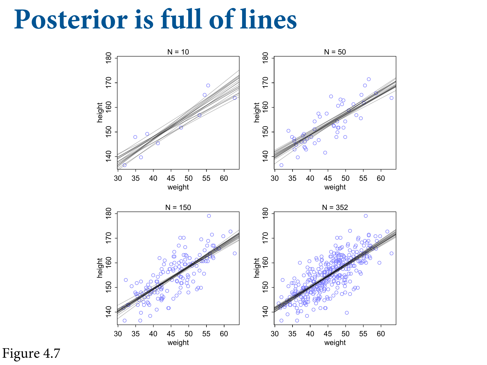
With the whole dataset, it gets quite narrow. You constrained the model to pick a line, and these are the lines that it likes. Doesn’t mean that it’s right.
slides_dir = here::here("docs/slides/L04")

The basic idea that any particular value of the \(x\) variables, \(mu\) has some density. It’s confident of the values on the inside, less of the values on the outside. As an example, what does the model expect the height of the individual is if weight is 50? \(mu\) at 50 is now going to create a distribution.
post = rethinking::extract.samples(m4.3)
mu_at_50 = post$a + post$b * (50 - xbar)
head(mu_at_50)## [1] 159.0740 159.4226 158.9418 159.2489 159.2202 159.2177mu_at_50 is a vector of predicted means, one for each random sample from the posterior.
rethinking::dens(mu_at_50, col = rangi2, lwd = 2, xlab = "mu|weight = 50") Find the 89% compatibility interval
Find the 89% compatibility interval
rethinking::PI(mu_at_50, prob = .89)## 5% 94%
## 158.5785 159.6799
It’s not sure how tall an individual is, but it thinks it’s in this region. But we want to do this for every x-axis value. This is what produces the smooth bowtie.

mu = rethinking::link(m4.3)
str(mu)## num [1:1000, 1:352] 157 157 157 157 157 ...rethinking::dens(mu)
You need to make a sequence of x-axis values (weight.seq). You could make it extraplote further if you like. Then you send these in to the funciton via link. There’s a box in the chapter that shows you how link works. It just loops, but saves you time.
What you end up with in \(m\) is 1000 rows, where each column is a value of weight. Then you can plot these up.
There are 352 rows in d2, corresponding to 352 individuals. What to do with this big matrix? link provides a posterior distribution of \(\mu\) for each case we feed it. We actually want a distribution of \(\mu\) for each unique weight value on the horizontal axis. Just pass it some new data:
# define sequence of weights to compute predictions for
# these vaules will be on the horizontal axis
weight.seq = seq(from = 25, to = 70, by = 1)
# use link to compute mu
# for each sample from posterior
# and for each weight in weight.seq
mu = rethinking::link(m4.3, data = data.frame(weight = weight.seq))
str(mu)## num [1:1000, 1:46] 136 137 137 136 137 ...And now there are only 46 columns in mu, because we fed it 46 different values for weight. Let’s plot the distribution:
# use type="n" to hide raw data
plot(height ~ weight, d2, type = "n")
# loop over samples and plot each mu value
for (i in 1:100)
points(weight.seq, mu[i,] , pch = 16, col = col.alpha(rangi2, .1))
# summarize the distribution of mu
mu.mean = apply(mu, 2, mean)
mu.PI = apply(mu, 2, PI, prob = .89)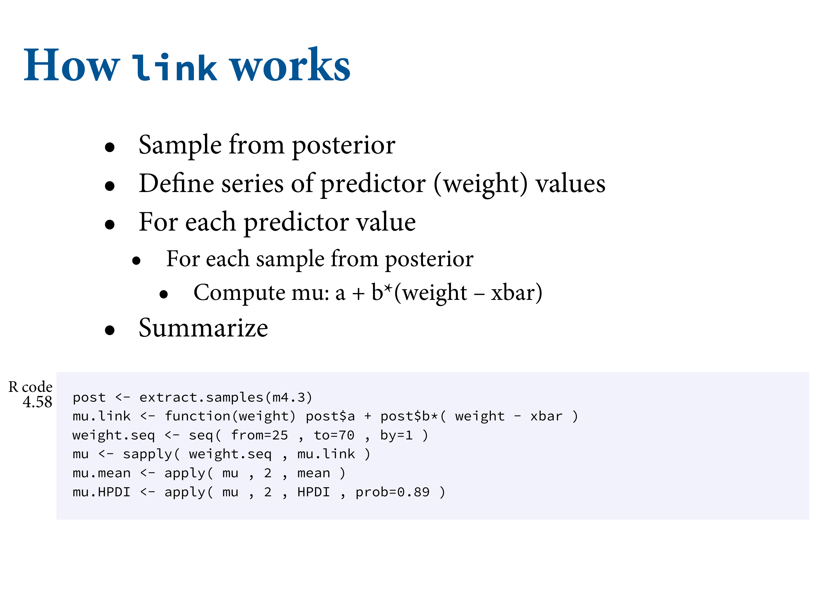
This is like rolling your own link here.
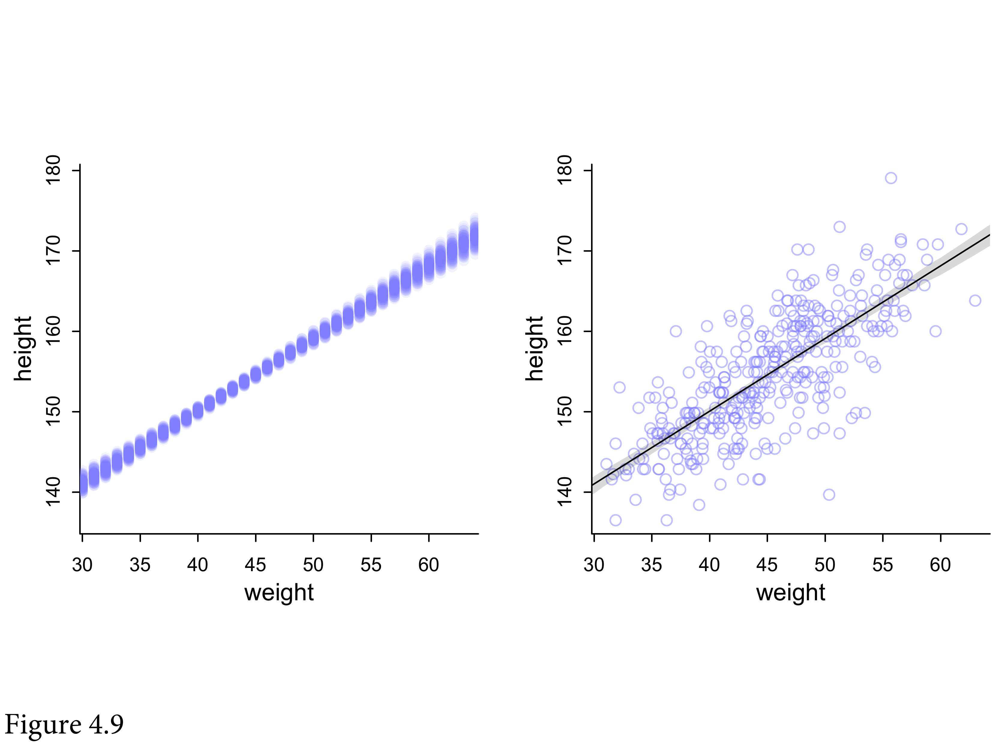
Think what’s going on with the distribution. Fuzzy bowtie. There’s a grey bowtie on the right that follows the same distribution on the left. Just comes from plotting the compatibility interval of the bowtie.

Again, there’s a correspondence between the spaghetti lines, and the bowtie form…  Same information, just a different visual style.
Same information, just a different visual style.
One benefit of the spaghetti lines is it prevents you from thinking the boundary is some magical event. Nothing happens at that boundary. Probability is a continuous space.

We can do the same thing for sigma. There’s an envelope we expect heights to be in.
Helper function called sim that shows conceptually what’s happening.
 That’s linear regression. The funny thing about it is not linear. Really linear regression is additive. You have an equation for \(mu\) which is a sum of a bunch of variables. We should call these additive regressions because you can use them to draw “lines” i.e. curves from lines. Why? There’s no reason that nature should be populated by straight-line relationships. We routinely have reason to think about curvo-linear relationship.
That’s linear regression. The funny thing about it is not linear. Really linear regression is additive. You have an equation for \(mu\) which is a sum of a bunch of variables. We should call these additive regressions because you can use them to draw “lines” i.e. curves from lines. Why? There’s no reason that nature should be populated by straight-line relationships. We routinely have reason to think about curvo-linear relationship.
There are common strategies. The two most common are polynomial regression - the most common - involves adding a square term. Also pretty bad. Often it’s used irresponsibly.
The second is splines. Basis splines, probably the most common. Computer drawing software uses these. They don’t exhibit the common pathologies of polynomials. But remember that they’re geocentric models. So when you receive the information from the model, there’s nothing mechanistic about this, and they can exhibit very strange behaviour outside of the range of the data.
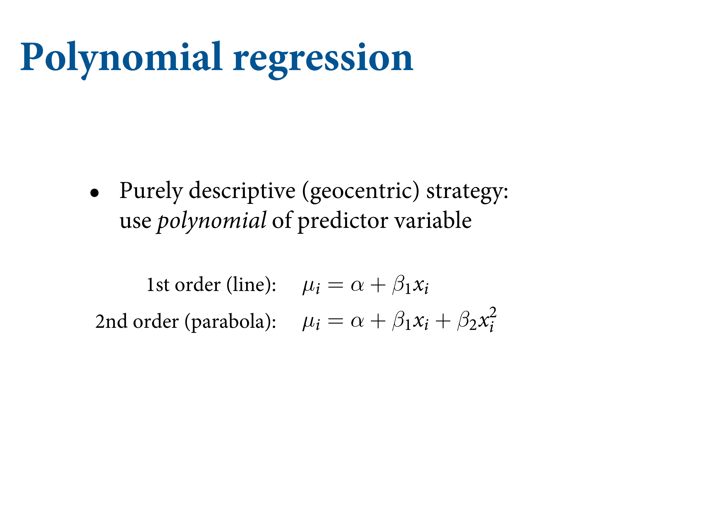 This is a descriptive strategy for drawing curves for the relationship between two variables. Second-order gives you a parabola. You can keep going - third order, fourth order. And on and on and on. You can push this to the limits of absurdity.
 The data we’re going to use is the total sample. Now we’ll use the kids. Looking at this you can appreciate this isn’t a line. Instead, let’s fit a parabola.
The data we’re going to use is the total sample. Now we’ll use the kids. Looking at this you can appreciate this isn’t a line. Instead, let’s fit a parabola.
 We can just glue on an epicycle here and square it. Why? So alpha can be the mean. Then you need to give it a new \(\beta\) coefficient. Setting priors for this is really hard, because \(\beta_2\) has no meaning. But the curve depends on \(\beta_1\) and \(\beta_2\), and they don’t work in isolation. The individual parameters don’t have meaning. It’s a horrible problem in interpretation. Otherwise it’s the same model. It’s a linear regression in the sense that it’s additive.
We can just glue on an epicycle here and square it. Why? So alpha can be the mean. Then you need to give it a new \(\beta\) coefficient. Setting priors for this is really hard, because \(\beta_2\) has no meaning. But the curve depends on \(\beta_1\) and \(\beta_2\), and they don’t work in isolation. The individual parameters don’t have meaning. It’s a horrible problem in interpretation. Otherwise it’s the same model. It’s a linear regression in the sense that it’s additive.

To get the machine to work, very useful to standardise the predictor variables. Center then divide by SD. Take weight, subtract the average weight from each weight value, then divide each of those 0-centered values by the standard deviation of weight. Takes weight and creates a set of z-scores. The fitting software works better on standardise values because it doesn’t have to guess the scale.

There’s a function in R called scale. All it does is subtract the mean, then divide by the standard deviation. Square the standardised weight.
 Cooked spaghetti. Now it has an infinite number of parabolas. Now we sample from the posterior, and we got a sample of the high-probability parabolas, a tiny slice of the whole space. And we draw them up, to start with, just 10 individuals. Over the full range, we get parabolas that vary wildly outside of the weights, but straight within the range of the data. This is a phenomenon that’s always present. THe uncertainty intervals always fan out outside of the data range. This is a problem for prediction. Not true for splines. This is because every parameter acts globally on the shape. You can’t tune a specfic region.
Cooked spaghetti. Now it has an infinite number of parabolas. Now we sample from the posterior, and we got a sample of the high-probability parabolas, a tiny slice of the whole space. And we draw them up, to start with, just 10 individuals. Over the full range, we get parabolas that vary wildly outside of the weights, but straight within the range of the data. This is a phenomenon that’s always present. THe uncertainty intervals always fan out outside of the data range. This is a problem for prediction. Not true for splines. This is because every parameter acts globally on the shape. You can’t tune a specfic region.

Now we add the next 10, including some children, and the flailing stops. Now we get curves in a much smaller region of the parameter space.
 Now it’s getting more concentrated. 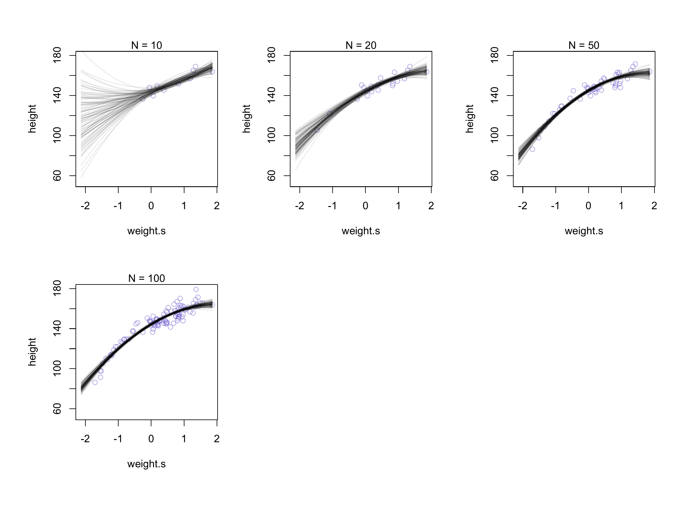
Now it’s getting more concentrated. 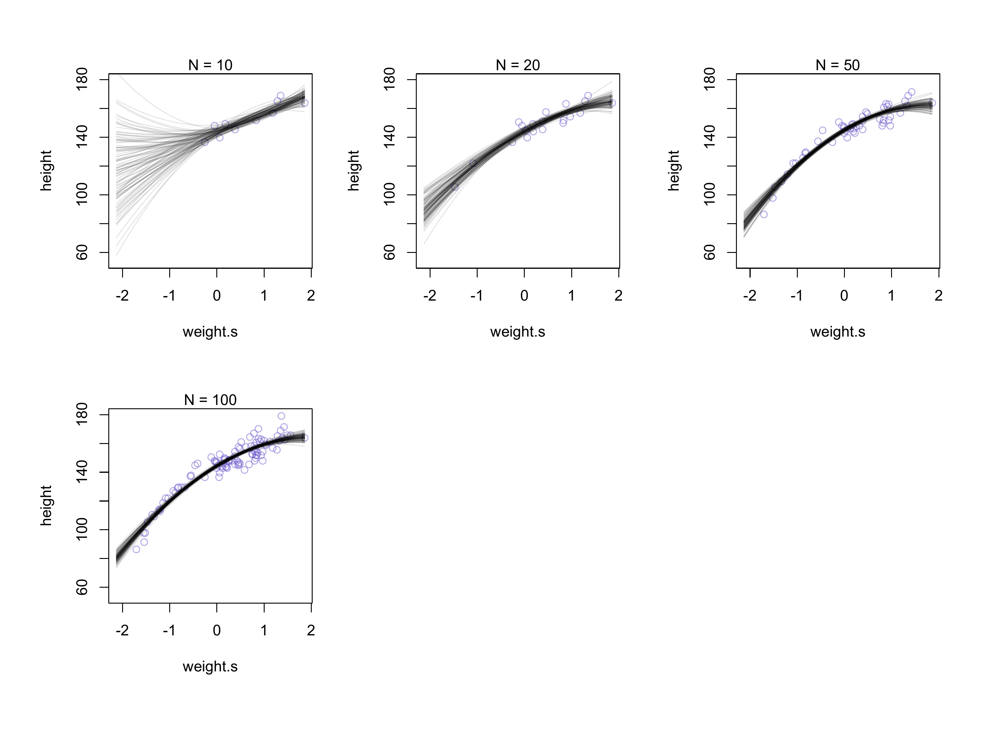


Now a thick dark line. Conditional on wanting a parabola to describe the relationship, here are the parabolas. Doesn’t mean the parabola is correct. 
It’s very sure, conditional on the shape, that that’s the parameter you want. Those lines don’t fit the data very well, but there’s almost no uncertainty about where they are.
I’ve extended the data a bit, and you can see the quadratic bends down. It curves down because it has to. Cubic have to turn twice. Have to turn. Can’t be monotonic.
For the cubic, we add our cubic term \(\beta_3\). Fits even better, but now it’s extrapolating upwards.

In this example, you had that outside of the range below the range. But this can also happen internally, when you have a gap in your data, and it’ll do silly things in between.
The bigger problem is that the parameters all jointly determine the shape, so the model can’t tune them independently to create local fits. That’s why you get silly predictions. Polynomials aren’t that flexible, because the must turn, a certain number of times.

A common alternative is another geocentric model, which is also satisfying because it’s born from a physical system used to do the same thing. A spline is this metal bar on the draftsman’s table. It bends the line to allow drafters to draw smooth curves. This things still exist. The spline is the bar, and the weights are anchors, knots.
 You can get a globally very wiggly function, with a bunch of local wiggly functions by putting them together. Very good for extrapolating. But remember they’re geocentric, so you have to understand how they work.
You can get a globally very wiggly function, with a bunch of local wiggly functions by putting them together. Very good for extrapolating. But remember they’re geocentric, so you have to understand how they work.
The basis function is a local function, and the spline is made up of interpolating basis functions. Basis = “component”. Big wiggly function made up of less wiggly functions.
The “P” stands for “penalised”.

Again, it’s a linear model, an additive equation for \(\mu\). But the predictor variables are not observed, rather synthetic data that defines the range of the curve that the parameter acts in. The actual predictor of interest will not appear in your model, but you’ll get a fantastic predictor of the relationship between the variables.
There will be one weight for each of the basis functions. And the weights affect the range defined by the \(\beta\) variables.
 New example. Let’s find something very wiggly. Climate data. Date of first cherry blossom bloom. Turns out there’s a very interesting relationship between the date of bloom, and the temperature. Big signature of climate change in this data.
New example. Let’s find something very wiggly. Climate data. Date of first cherry blossom bloom. Turns out there’s a very interesting relationship between the date of bloom, and the temperature. Big signature of climate change in this data.
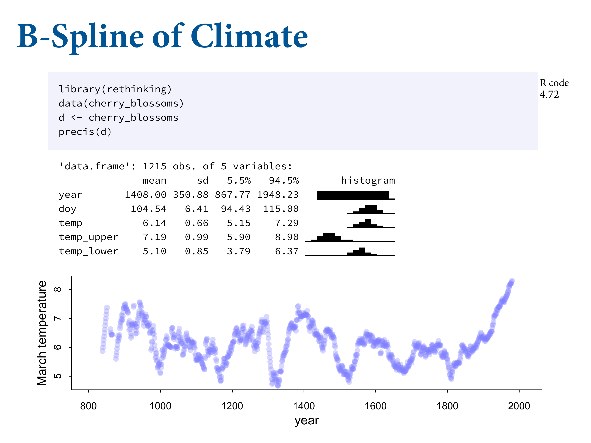
1215 observations. Earliest date is little after 800. A few gaps. Earlier dates are getting temps from tree rings. Wiggles a lot. You can see there’s overlap. You’ll recognise the end of this trend. Our goal is to de-trend this temperature record. We want to look at micro-deviations.
 Let’s start with a terrible approximation, and work forwards.
Let’s start with a terrible approximation, and work forwards.
Here’s the recipe. First choose the location of the knots. Here they are points where the basis spline pivots. Choose a degree of the basis function. Then choose degree of local spline. Then find the posterior distribution of weights. Run this just like any old linear regression.
 Start with just 5 knots at equal quantiles. Large literature on this. Nice because it gives you more knots where there’s more data. One at the median, then one at each extreme, and one in between.
Start with just 5 knots at equal quantiles. Large literature on this. Nice because it gives you more knots where there’s more data. One at the median, then one at each extreme, and one in between.
 Let’s think about construction of these synthetic variables. Think of year. We’ll never use them again. The knots are anchored at year, but then they’re gone. Start with a degree 1 basis function (i.e. straight line). Wiggly function composed of straight line. Focus on the one in red. Basis fucntion 4 has its maximum value at the fourth knot. Only basis function with a non-zero value at that location. It’s weight is determining the position of the spline at that point. As you move away, there are two basis functions that are turning on. Each of them have they’re own precious parameter value.
Let’s think about construction of these synthetic variables. Think of year. We’ll never use them again. The knots are anchored at year, but then they’re gone. Start with a degree 1 basis function (i.e. straight line). Wiggly function composed of straight line. Focus on the one in red. Basis fucntion 4 has its maximum value at the fourth knot. Only basis function with a non-zero value at that location. It’s weight is determining the position of the spline at that point. As you move away, there are two basis functions that are turning on. Each of them have they’re own precious parameter value.
When you get to higher degress, they’ll be curves. At any particular point (except at a knot), two of these basis functions will determine the value.
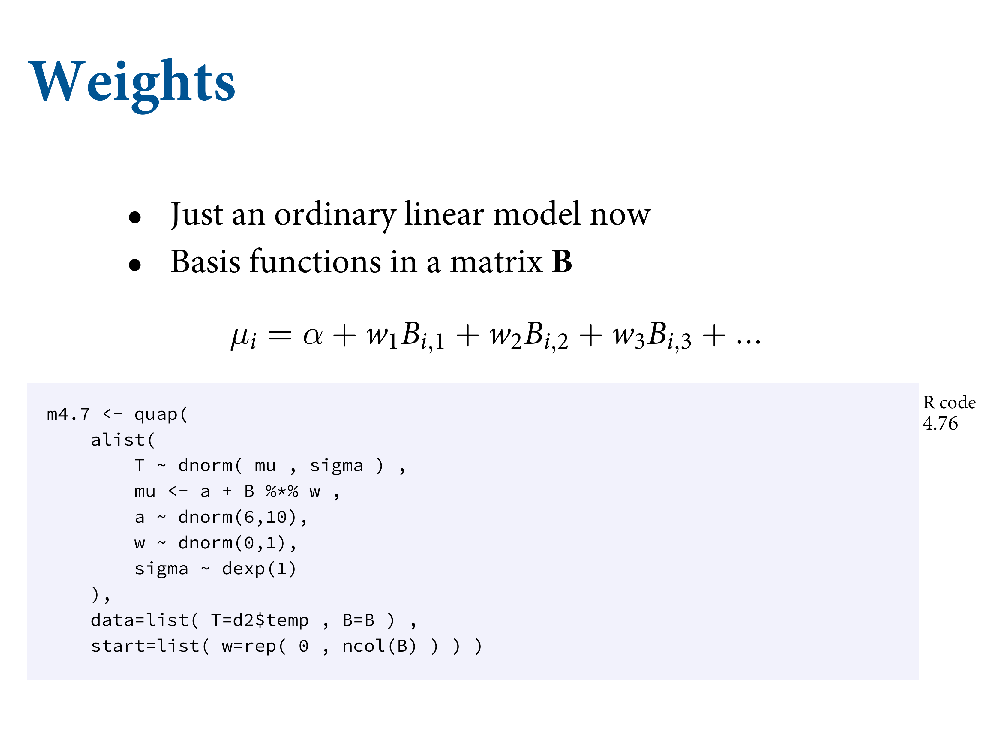
The only new trick here is to use linear algebra. You can imagine writing 5 terms.
We have a prior for each of the weights. If you make it tighter, the curve gets less wiggly, and that’s why they call it a penalty. You want one so that you don’t overfit.
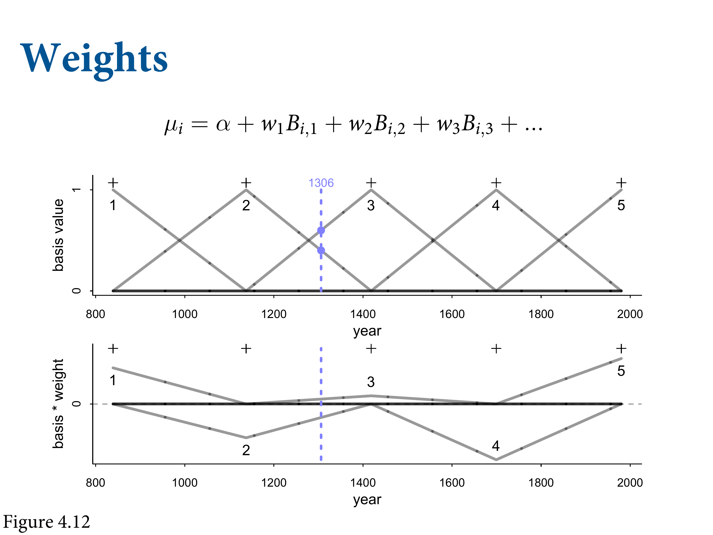
Repeating the equation for \(\mu\). Showing you the posterior mean weights multiplied by those basis functions. That’s what the predictor up top is. Focusing on the posteriro mean. There’s uncertainty here. What happens now is you’re adding those values together. Two lines get added together, and that determines prediction of temperature.

Resulting spline isn’t super wiggly. Depends on what you want to de-trend.
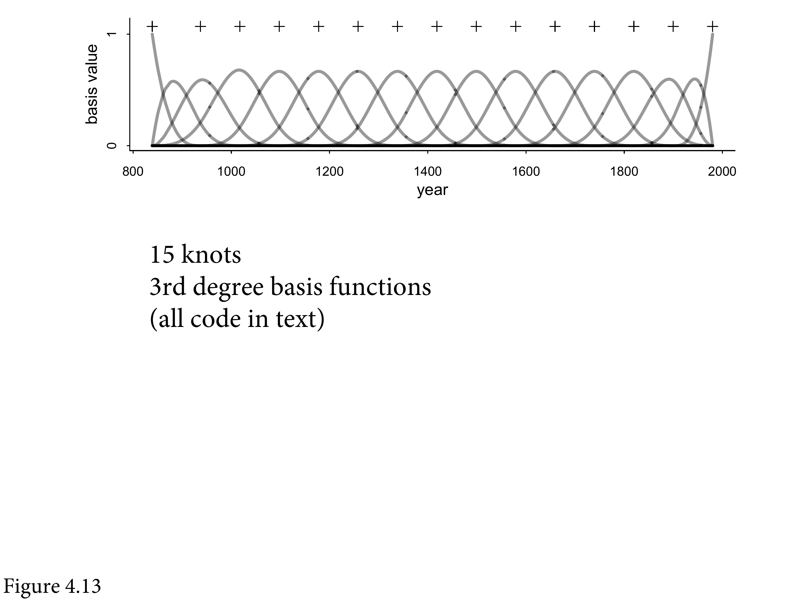
Let’s do cubic splines. Most popular because they’re flexible but not crazy. Play around with the number of knots. What you’ll see is you can have too few knots, but at some point you’ll have enough that it won’t make much of a difference. This is what the basis functions look like, and now they’re wigglier, but they also overlap more, so now at a particular point you can have up to four basis curves overlapping.
Here’s with 50 samples from the posterior distribution. There’s all this wiggle, and you add them together and get the spline. Some of these regions have substantial uncertainty about the weight. The uncertainty will collapse. At the parameter level, there’s more uncertainty than there is at the prediction level. This is because the parameters combine to make a prediction. You can be uncertain about the values of the parameters, but you can be very certain about they’re sum. Because if you make \(w_3\) bigger, you have to make something else smaller. So when you plot the parameters, you’ll see a lot more uncertainty than the predictions.

Now when we add them, we get a pretty wiggly line. The amount of wiggliness depends on your scale of interest.
Play around with the knots and degree and priors.
 Lots of different methods. There are ways of doing Bayesian splines where the number of knots is a parameter you can get a posterior distribution for. Why not just have a knot at every year.
Lots of different methods. There are ways of doing Bayesian splines where the number of knots is a parameter you can get a posterior distribution for. Why not just have a knot at every year.